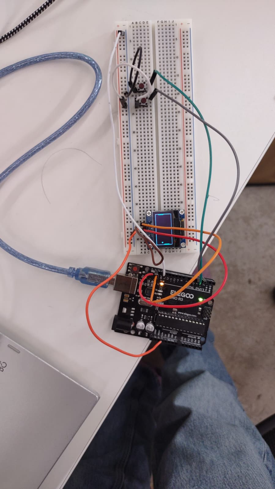
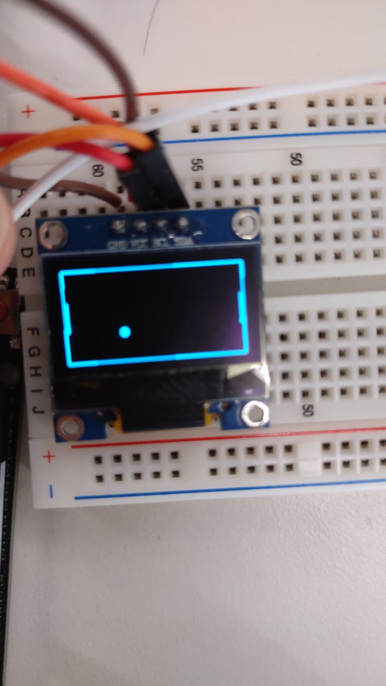
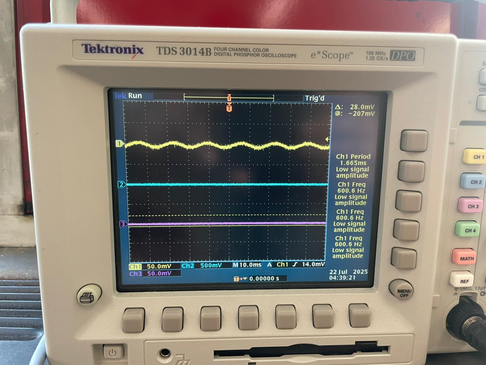
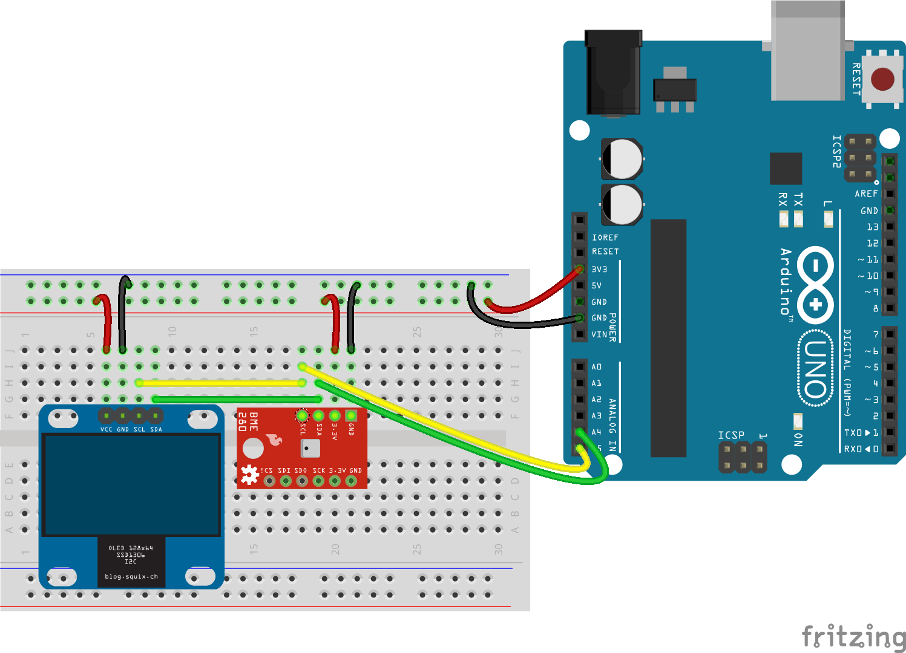
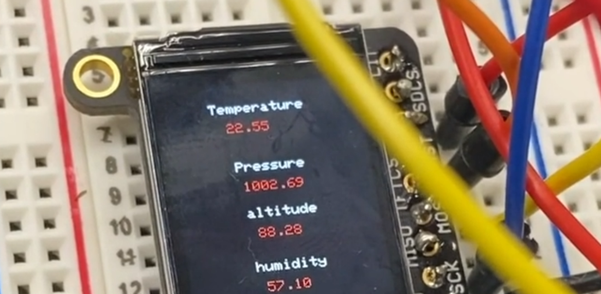
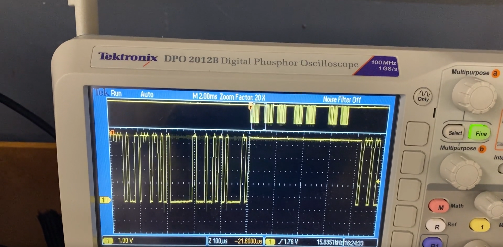
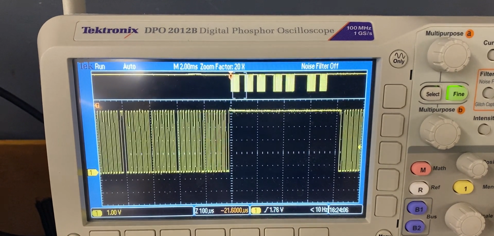

This week we were tasked with creating an MVP
When life gives you a literal slip (hope the knees are okay!), you create an arcade. That's not a backup plan—that's engineering poetry.
Hidden win: Clothes-folding needs precision mechanics; your pivot took advantage of software creativity. Same grit, different muscles.
Instant joy: Ping pong isn’t just "simpler"—it’s a psychological hook. You validated faster by making users smile first.
That "slip" (hope you’re okay!) became a catalyst for creativity. Switching to a ping-pong arcade game wasn’t "next best"—it was genius. Why?
Speed to launch: You built a playable prototype in 4 hours—a testament to focused execution.
Pure fun factor: Games make tech relatable. Your first idea (ping pong) resonated because it’s instant joy.
The MVP is a minaturised version of your final project.At first I had decided to do a folding clothes prject but due to several dificulties and a slip (literally)I was unable to complete my project in time .There fore I decided to go ahead and do the next best thing create a mini arcade game for you to play ping pong with. This was the very first idea that I had presented and was happy with the way it turned out .

Mistakes not Make Again/Why not use Arduino UNO
Slow
Does not have Wifi or Bluetooth
Will cause pain and misery for hours .
Here is how I went on about with it :
First I took an oled screen two buttons my trusted XIAO or ESP32C3 several pin to pin wires and began.I went through several tutorials on the curcuit diagram .Connecting the SCL and SDA were the most important as well as tiring part of my project .I got my project up and running in just 4 hours .The code was mighty exhaustive the insurmountable mountain I was unable to climb.

Now came the one part which most of us I assume or atleast I struggle with that is the coding part .Therefor I did the hardwork so you can see the code.Here it is in its entirety:
But that wasnt the end of it .I had the great idea of experimenting with Arduino Uno .Which i learnt to be not so great of a chip compared to the XIAO .As Booby listed previously .But it did work as visible in the images listed above and video down here .
⏱️ Cycle Time: Each wave repeats every 380.1 nanoseconds (that’s billionths of a second!).
🔁 Stability: The signal is perfectly periodic (no drift or jitter)—it’s like a metronome for electronics.
📏 Signal Size: Channel 1 () shows small swings of ~23.2 mV, typical for digital logic or precision circuits.
Now for the second part of this Project I had to Use an oscilloscope to discover the time domain at which my output device is operating. Is it on a fixed clock? What's its speed? Share images and describe your findings

Here as displayed on the oscilloscope
Part 2:
This week, I explored electronic output devices—components that respond to signals from a microcontroller to perform actions like displaying information, making sounds, or moving motors. My task was to choose an output device, pair it with a microcontroller, and program it to work.
With so many options—buzzers, DC motors, servo motors, LEDs—I decided to combine an input sensor (BME/BMP280) with an output display (Adafruit 1.14" TFT screen) to create a mini environment monitor.
Then for the second part of the Assignment I built a screen that displays the altitude temprature and humidity .
Image of curcuit.

Heres how I went onto buid it .Fistly,I gathered the required materials
1.BMP 280
2.TFT ISPLAY
3.Several libraries/
4.Others:The XIAO,Pin to Pin wires & a usb cable
These were the essentials .
How did I begin you ask.
THE PROCESS
Setting everything up involved several key steps:
Hardware Connections
Carefully wired the BME280 sensor to the Arduino for data input.
Connected the TFT display to visualize the sensor readings.
Software Setup
Installed necessary libraries (Adafruit_ST7789, Adafruit_GFX, and Adafruit_BME280) to enable communication between the Arduino and the devices.
Wrote a program to read sensor data (temperature, humidity, pressure) and display it on the screen in real time.
Testing & Calibration
Verified sensor accuracy by comparing readings with known values (like room temperature).
Adjusted the display layout for better readability, ensuring text was clear and properly formatted
The code did take up some time but was doable.
#include
#include // Core graphics library
#include // Hardware-specific library for ST7735
#include // Hardware-specific library for ST7789
#include
#include
#include
#include
#if defined(ARDUINO_FEATHER_ESP32) // Feather Huzzah32
#define TFT_CS 14
#define TFT_RST 15
#define TFT_DC 32
#elif defined(ESP8266)
#define TFT_CS 4
#define TFT_RST 16
#define TFT_DC 5
#else
// For the breakout board, you can use any 2 or 3 pins.
// These pins will also work for the 1.8" TFT shield.
#define TFT_CS 10
#define TFT_RST 9 // Or set to -1 and connect to Arduino RESET pin
#define TFT_DC 8
#endif
#define SEALEVELPRESSURE_HPA (1013.25)
// OPTION 1 (recommended) is to use the HARDWARE SPI pins, which are unique
// to each board and not reassignable. For Arduino Uno: MOSI = pin 11 and
// SCLK = pin 13. This is the fastest mode of operation and is required if
// using the breakout board's microSD card.
// For 1.44" and 1.8" TFT with ST7735 use:
//Adafruit_ST7735 tft = Adafruit_ST7735(TFT_CS, TFT_DC, TFT_RST);
// For 1.14", 1.3", 1.54", 1.69", and 2.0" TFT with ST7789:
Adafruit_ST7789 tft = Adafruit_ST7789(TFT_CS, TFT_DC, TFT_RST);
// OPTION 2 lets you interface the display using ANY TWO or THREE PINS,
// tradeoff being that performance is not as fast as hardware SPI above.
//#define TFT_MOSI 11 // Data out
//#define TFT_SCLK 13 // Clock out
// For ST7735-based displays, we will use this call
//Adafruit_ST7735 tft = Adafruit_ST7735(TFT_CS, TFT_DC, TFT_MOSI, TFT_SCLK, TFT_RST);
// OR for the ST7789-based displays, we will use this call
//Adafruit_ST7789 tft = Adafruit_ST7789(TFT_CS, TFT_DC, TFT_MOSI, TFT_SCLK, TFT_RST);
float p = 3.1415926;
Adafruit_BME280 bme;
void setup(void) {
Serial.begin(9600);
Serial.print(F("Hello! ST77xx TFT Test"));
if (!bme.begin(0x76)) {
Serial.println("Could not find a valid BME280 sensor, check wiring!");
while (1);
}
// Use this initializer if using a 1.8" TFT screen:
// tft.initR(INITR_BLACKTAB); // Init ST7735S chip, black tab
// OR use this initializer if using a 1.8" TFT screen with offset such as WaveShare:
// tft.initR(INITR_GREENTAB); // Init ST7735S chip, green tab
// OR use this initializer (uncomment) if using a 1.44" TFT:
//tft.initR(INITR_144GREENTAB); // Init ST7735R chip, green tab
// OR use this initializer (uncomment) if using a 0.96" 160x80 TFT:
//tft.initR(INITR_MINI160x80); // Init ST7735S mini display
// OR use this initializer (uncomment) if using a 1.3" or 1.54" 240x240 TFT:
//tft.init(240, 240); // Init ST7789 240x240
// OR use this initializer (uncomment) if using a 1.69" 280x240 TFT:
//tft.init(240, 280); // Init ST7789 280x240
// OR use this initializer (uncomment) if using a 2.0" 320x240 TFT:
//tft.init(240, 320); // Init ST7789 320x240
// OR use this initializer (uncomment) if using a 1.14" 240x135 TFT:
tft.init(135, 240); // Init ST7789 240x135
// OR use this initializer (uncomment) if using a 1.47" 172x320 TFT:
//tft.init(172, 320); // Init ST7789 172x320
// SPI speed defaults to SPI_DEFAULT_FREQ defined in the library, you can override it here
// Note that speed allowable depends on chip and quality of wiring, if you go too fast, you
// may end up with a black screen some times, or all the time.
//tft.setSPISpeed(40000000);
Serial.println(F("Initialized"));
uint16_t time = millis();
tft.fillScreen(ST77XX_BLACK);
time = millis() - time;
Serial.println(time, DEC);
//delay(5000);
}
The Result: "Environment Watch"
The final setup acts like a mini weather station, showing:
Live temperature updates
Current humidity levels (thanks to the BME280)
Real-time air pressure readings
Seeing the numbers update dynamically on the screen was incredibly satisfying—it confirmed that the sensor and display were communicating perfectly

Challenges & Lessons Learned
Library Dependencies: Ensuring all libraries were correctly installed was crucial—missing one meant the code wouldn’t run.
Wiring Precision: A loose connection once caused the display to malfunction, so double-checking all wires saved me debugging time.
Code Optimization: Initially, the display refresh rate was slow. Tweaking the code improved responsiveness.
Future Improvements
This project has so much potential! Next steps could include:
Adding more sensors (like air quality or light sensors).
Implementing data logging to track environmental changes over time.
Designing a custom enclosure for a polished look.
Working with the Oscilloscope

One of the most interesting (and challenging) parts of this project was using an oscilloscope to analyze the signals from my BME280 sensor. Since I was new to oscilloscopes, it took some trial and error to get meaningful readings—but it was a great learning experience!
What I Observed
When I connected the sensor to the oscilloscope, I noticed:
Continuous Data Streams: The BME280 constantly sends environmental data, creating a rapid, fluctuating waveform.
Voltage Levels: The sensor communicates at 3.3V logic levels, which the oscilloscope had to be properly scaled to capture.
Signal Noise: At first, the readings looked messy—likely due to electrical interference or loose connections.
Challenges & Fixes
Auto-Scaling Issues: The oscilloscope struggled to automatically adjust to the sensor's fast data rate. Switching to manual scaling helped stabilize the waveform.
Triggering Problems: Setting the right trigger level was key—without it, the signal kept jumping around unpredictably.
Grounding Matters: Ensuring a solid ground connection reduced noise and made the signal much clearer.

Why This Was Useful
Seeing the raw sensor signals helped me:
✔ Verify the sensor was working correctly (no weird voltage drops or interruptions).
✔ Understand data transmission timing (how often readings were being sent).
✔ Debug potential wiring issues (like noise from poor connections).
Final Thoughts
While oscilloscopes can seem intimidating at first, they’re incredibly powerful tools for troubleshooting electronics. Next time, I’d love to explore:
Comparing signals from different sensors.
Using protocol decoding (like SPI/I2C) to inspect the actual data packets.